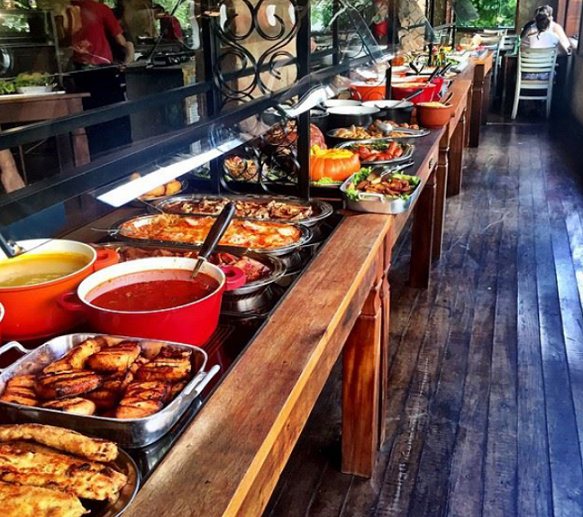
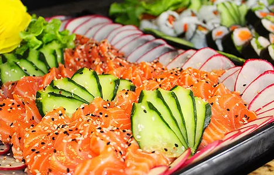

Cardápio
RODÍZIO DE CARNES
Contamos com um cardápio variado, com mais de 16 cortes de carnes, como picanha, costela, cupim, faisão, carne de porco, carneiro, além de outros cortes deliciosos para completar sua experiência na Los Pampas!
BUFFET / SELF SERVICE
Nosso buffet conta com mais de 10 tipos de massas e risotos, que podem ser acompanhados com o molho de sua preferência, dentre eles temosmolho branco, ao sugo, bolonhesa, quatro queijos e funghii

SUSHI
Confira nossa seleção de sushis, com peixes selecionados e uma variedade entre sashimi, hossomaki, hotrolls, filadélfia e muito mais!
